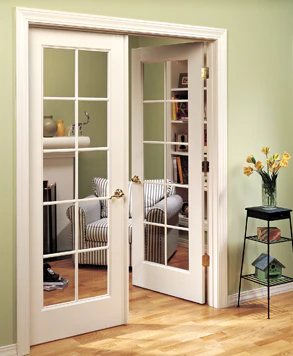

İç Kapı & Doğrama: Modeller ve Malzemeler
Kompakt laminat, PVC ve masif (doğal ağaç) seçenekleri; kasa-pervaz, menteşe-kilit ve ses/ısı performansı. Ölçü alma, kapı yönü ve bakım ipuçları. İlgili hizmet sayfası: İç Kapı & Doğrama.

Giriş
İç kapılar; mahremiyet, akustik kontrol ve ısı zonlaması için kritik. Doğru malzeme ve aksesuar seçimiyle uzun yıllar sessiz, sorunsuz kullanım mümkün. Aşağıda modellerden ölçülere, menteşeden contaya tüm ana başlıklar derli toplu.
Modeller
- Düz panel (flat): Minimal & ekonomik; laminat veya lak uygulamaya uygun.
- Kanallı/çıtalı: Modern çizgi, ritim etkisi; toz tutmayan mikro kanallar.
- Camlı (light-line): Oda içi gün ışığını paylaşır; temperli/buzlu cam önerilir.
- Sürgü (duvar içi/üstü): Yer kazandırır; sessiz ray ve kapatma yumuşatma şart.
- Çift kanat/Fransız: Geniş açıklıklar için simetrik görünüm.
Malzemeler & Kaplamalar

- Kompakt laminat: Neme ve darbelere dayanıklı; yoğun trafikli alanlar için ideal.
- PVC kaplama: Ekonomik, temizliği kolay; çizilmelere karşı orta sınıf dayanım.
- Masif (meşe/çam/ceviz): Doğal damarlı görünüm; çalışmayı azaltmak için katlı karkas.
- MDF üzeri lak: Cam gibi yüzey; mat lak güncel trend ve parmak izi göstermez.
- Alüminyum çerçeve + cam: Modern/loft hissi; dar çerçevede yüksek rijitlik.
- Kasa & pervaz: Nemli bölgelerde kompakt/ısıya dayanım öncelikli ürünler.
Ölçülendirme & Kapı Yönü
- Net açıklık: Standart yapıda 80×200 cm yaygındır; koridor ve banyo için 70 cm de görülür.
- Kasa payı: Kasa dıştan dışa açıklıktan ~6–8 cm küçüktür; duvar kalınlığına göre pervaz ayarı yapılır.
- Kapı yönü: Kapının menteşe tarafı ve içe/dışa açılımı koridor akışına göre seçilir.
- Eşik & süpürgelik: Islak hacimlerde damlalık ve eşik yükseltisi düşünülmeli.
- Engel mesafeleri: Kapı kolu/dolap/anahtar mesafesi min. 5 cm boşlukla planlanır.
Aksesuar: Menteşe, Kilit, Contalar
- Gizli menteşe: Minimal görünüm; 3 adet kullanımı sarkmayı önler.
- Mıknatıslı dil/kilit: Sessiz kapanış; çocuk odalarında çarpma sesini azaltır.
- Kapı altı düşer conta: Ses ve hava geçişini keser; özellikle ebeveyn/çalışma odalarında etkili.
- Hidrolik kapatıcı: Mutfak/ıslak hacim yakınında kokuyu ve ısı kaçışını sınırlar.
- Kulp & rozset: Mat siyah, fırçalı nikel ve altın tonlar 2025’te öne çıkanlar.
Ses/Isı & Dayanım
Huzurlu bir ev için kapı çevresinde tam contalama ve gerekli odalarda akustik dolgu önerilir. Nemli iklimlerde (kıyı, banyo yakını) genleşme-çalışma için kompakt laminat veya PVC yüzeyler avantaj sağlar; masif kapılarda ise çok katmanlı karkas ve nem dengesine dikkat edilmelidir.
Bütçe Kademeleri
| Seviye | Kapsam | Aralık (₺) |
|---|---|---|
| Temel | PVC kaplama, standart kasa-pervaz, görünür menteşe | … |
| Orta | Kompakt laminat yüzey, mıknatıslı kilit, tam conta | … |
| Üst | Masif kapı, gizli menteşe, düşer conta, mat lak/külçe kulp | … |
Net fiyat; ölçü, malzeme ve aksesuar kombinasyonuna ve montaj koşullarına göre belirlenir.
Bakım
- Masif ve laklı yüzeylerde PH nötr temizlik; solvent ve aşındırıcıdan kaçının.
- Menteşe ve kilitleri yılda 1 kez yağlayın; sökülmeden tozdan arındırın.
- Kapı altı düşer contaları 6 ayda bir kontrol edip gerektiğinde ayarlayın.
Sık Sorulan Sorular
Kompakt laminat mı masif mi?
Yoğun trafik ve nemli bölgelerde kompakt laminat daha stabildir. Estetik ve doğal doku önceliği varsa iyi kurutulmuş masif ve katlı karkasla ilerleriz.
Kapı ses yalıtımını nasıl artırırız?
Tam contalama, kapı altı düşer conta ve yoğun dolgu panel; gerekiyorsa 38–42 dB sınıfı kombinasyonlar.
Menteşe sayısı kaç olmalı?
Standart kapıda 3 adet; ağır/masif kanatlarda 4 gizli menteşe önerilir. Bu sarkmayı ve ses yapmayı önler.
Teklif Çağrısı
Ölçüyü yerinde alalım, numune ve aksesuar seçimini birlikte yapalım; 1 günde montaj!